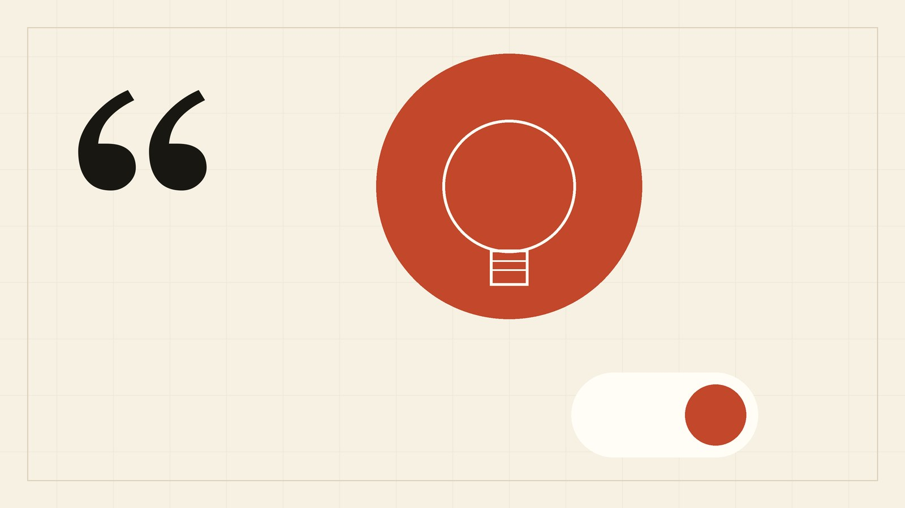

Web Technologies 2026 · learning site
Small
Web
Three small things I built to learn the web: a wall of quotes, five ideas I might turn into a project, and a machine whose only job is to switch itself off.

What is here
Four pages, one small site.
Every page is hand-written HTML with one stylesheet. There is no framework and nothing to install — open a page and it works.
How it is built
Written once, reused everywhere.
The navigation and the footer are not copied into four pages. They
live in nav.html and footer.html, and a
small script fetches them into every page at load time. Change the
menu once, and all four pages change with it.
The rest is plain: semantic elements, one stylesheet, and three scripts — the navigation, the random quote, and the machine. The layout is fluid, the menu collapses to a button on a phone, and every interactive control can be reached with a keyboard.
This is the learning site for Web Technologies 2026 at BiUH: the place where the lessons end up. The quotations are real and attributed; the machine is deliberately useless, which is the point.